Eine Gedankenreise mit Albert Einstein für die Oberstufe
Was passiert, wenn du versuchst, Licht wie einen geworfenen Ball zu behandeln? Genau an dieser Stelle beginnt der Bruch mit der klassischen Physik. In dieser Lerneinheit gehst du denselben Fragen nach, die Einstein von der speziellen Relativitätstheorie bis zur allgemeinen Relativitätstheorie geführt haben.
Beginnen wir mit einem Konflikt: In der klassischen Physik nach Newton sind Raum und Zeit absolut. Das heißt: Alle Beobachter könnten sich im Prinzip auf eine gemeinsame Uhr und auf eine universelle Gleichzeitigkeit einigen. Einstein merkt aber, dass dieses Bild nicht mehr sauber funktioniert, sobald Licht eine Rolle spielt.
Zeit vergeht überall gleich schnell, Raum ist eine feste Bühne und Gravitation wirkt als Kraft über Distanz.
Wenn Licht immer dieselbe Geschwindigkeit hat, kann es keinen Beobachter geben, für den ein Lichtstrahl stillsteht. Genau das widerspricht der klassischen Addition von Geschwindigkeiten.
Hier kommt ein Gedankenexperiment: Wir betrachten ein Haus, das sich nicht bewegt und einen Zug, der mit $100 \frac{km}{h}$ nach links vorbei fährt. Ein Meteor fliegt mit einer Geschindigkeit von $20000 \frac{km}{h}$ von rechts auf das Haus zu, aus Sicht des Beobachters im Haus. Aus Sicht eines Beobachters im Zug bewegt sich der Meteor mit der Geschwindigkeit $20100 \frac{km}{h}$. Das ist die klassische Addition von Geschwindigkeiten. Aber was passiert, wenn der Meteor ein Lichtstrahl ist, der mit Lichtgeschwindigkeit unterwegs ist? Genau hier liegt das Problem: Für den Beobachter im Zug hätte das Licht eine größere Geschwindigkeit als Lichtgeschwindigkeit, was nicht sein kann. Deshalb muss es eine neue Theorie geben, die erklärt, wie das mit der Lichtgeschwindigkeit zusammenpasst und trotzdem die Naturgesetze in allen Inertialsystemen gleich sein.
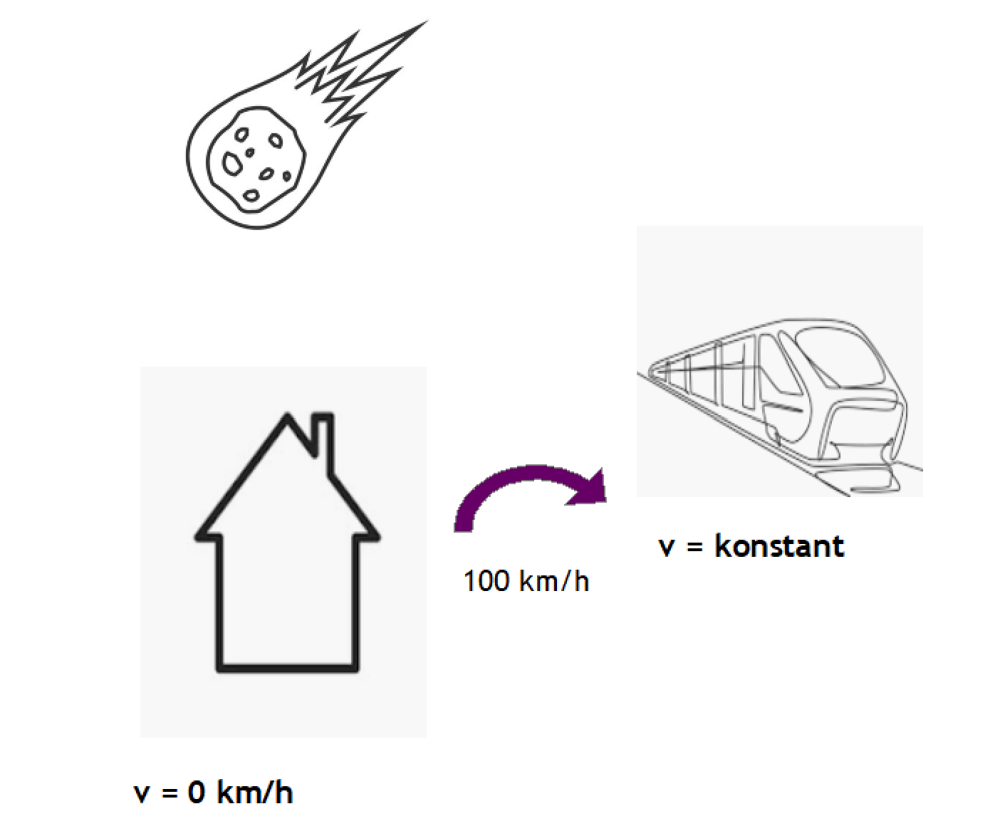
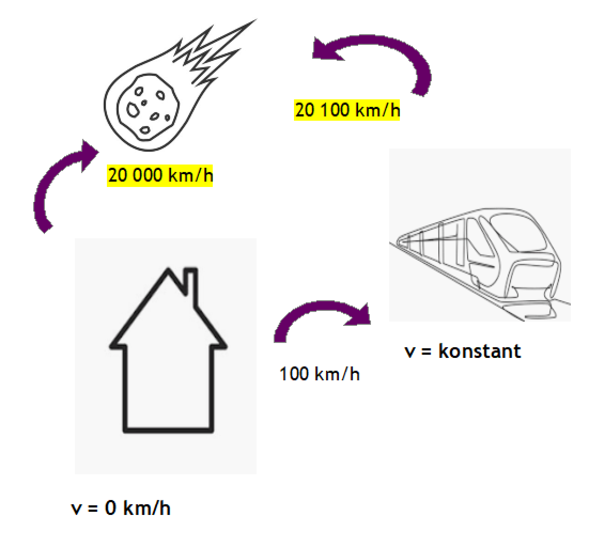
Alle Naturgesetze haben in allen Inertialsystemen dieselbe Form. Kein gleichförmig bewegtes System ist physikalisch bevorzugt.
Die Lichtgeschwindigkeit c ist in jedem Inertialsystem gleich. Nichts ist schneller.
Merke: Die spezielle Relativitätstheorie von 1905 gilt für gleichförmig bewegte Systeme, also ohne Beschleunigung und ohne Gravitation.
Ein Inertialsystem ist ein Bezugssystem, in dem das Trägheitsgesetz gilt: Jeder Körper, auf den die Gesamtkraft Null wirkt, ist entweder in Ruhe oder bewegt sich geradlinig gleichförmig. Ein beschleunigtes System ist deshalb kein Inertialsystem, weil dort genau dieses einfache Bewegungsverhalten nicht mehr ohne zusätzliche Scheinkräfte beschrieben werden kann.
Für die spezielle Relativitätstheorie ist das zentral: Beide Einstein-Postulate beziehen sich auf Inertialsysteme. Wenn sich zwei Systeme nur gleichförmig geradlinig zueinander bewegen, sind beide gleichberechtigt. Sobald ein System beschleunigt oder rotiert, verlässt du diesen Rahmen.
Die SRT entsteht nicht aus einer neuen Formel, sondern aus einem Konflikt zwischen klassischer Physik und der Konstanz der Lichtgeschwindigkeit. Der Preis dafür ist hoch: Raum und Zeit sind nicht mehr absolut.
Nun werden die Folgen der beiden Postulate sichtbar: dieselbe Lichtgeschwindigkeit zwingt uns dazu, Zeit, Länge und Gleichzeitigkeit neu zu definieren.
Eine Lichtuhr ist ein Gedankenmodell für eine Uhr: Ein Lichtblitz läuft zwischen zwei Spiegeln hin und her. Wenn der Lichtblitz einmal nach oben und wieder nach unten läuft, ist eine Sekunde vergangen. In der ruhenden Rakete verläuft dieser Weg einfach senkrecht auf und ab. In der bewegten Rakete sieht ein äußerer Beobachter aber keinen senkrechten Weg mehr, sondern einen schrägen Zickzack-Weg, weil sich die Rakete währenddessen weiterbewegt.
Der entscheidende Unterschied ist also nicht das Licht selbst, sondern die Länge des beobachteten Weges: In der bewegten Rakete ist der Weg des Lichts viel länger. Weil die Lichtgeschwindigkeit trotzdem gleich bleiben muss, kann nur eine Sache anders sein: Für den äußeren Beobachter muss mehr Zeit vergehen. Genau das ist die Zeitdilatation.
\[c\ =\ \frac{\text{Weg}_\text{lang}}{\text{Zeit}_\text{lang}}\ =\ \frac{\text{Weg}_\text{kurz}}{\text{Zeit}_\text{kurz}}\]
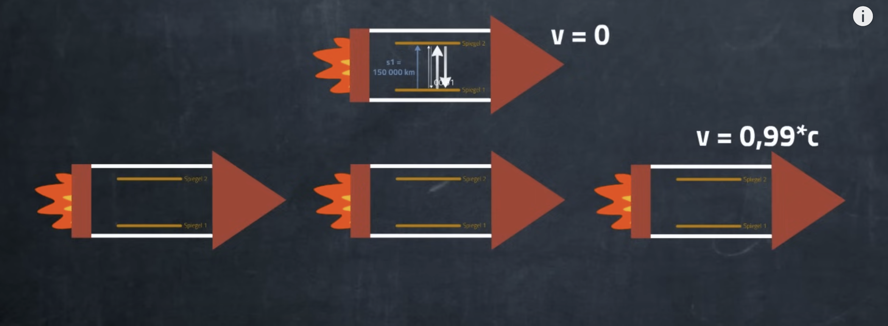
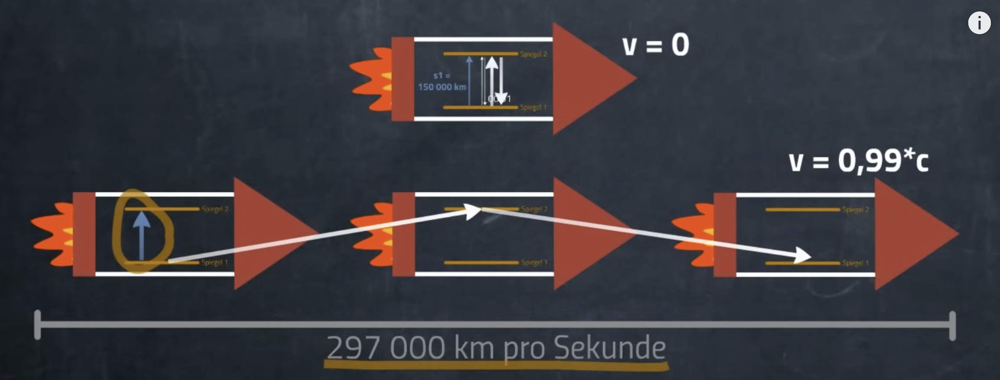
Für die Herleitung vergleichst du zwei Zeiten: Im Ruhesystem der Rakete legt das Licht nur die Höhe zwischen den Spiegeln zurück. Von außen betrachtet bewegt sich die Rakete aber gleichzeitig weiter, deshalb entsteht ein längerer schräger Weg. Genau dieses Dreieck liefert mit dem Satz des Pythagoras die gesuchte Beziehung.
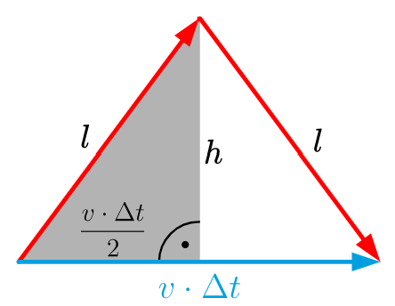
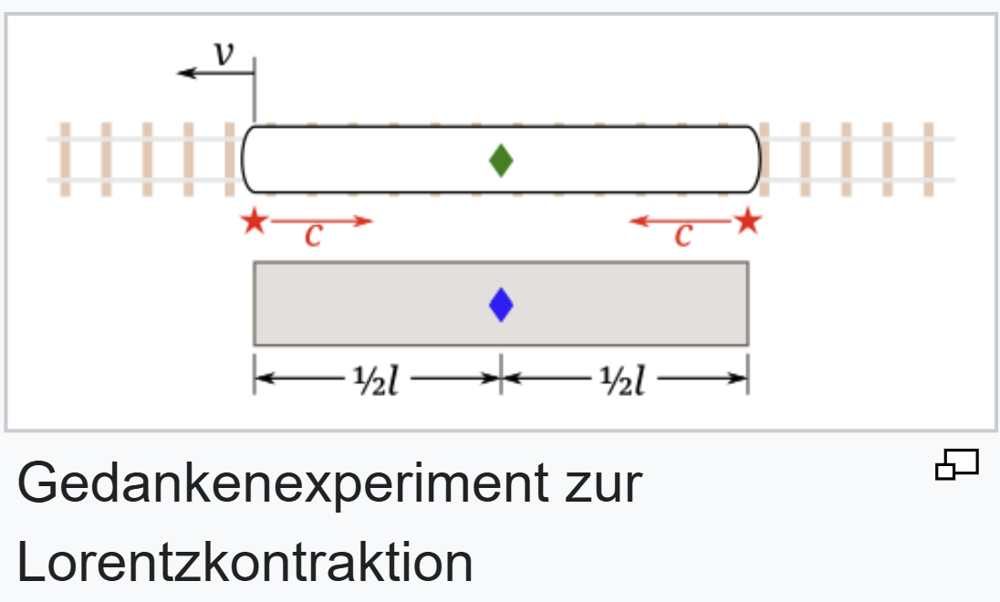
Die Blitze sind für beide Beobachter gleich, aber die Reihenfolge der Blitze ist unterschiedlich. Das liegt daran, dass die Lichtblitze sich mit Lichtgeschwindigkeit ausbreiten, aber die Beobachter sich relativ zueinander bewegen. Deshalb kommt es zu einer relativen Gleichzeitigkeit: Was für den einen Beobachter gleichzeitig ist, ist für den anderen nicht gleichzeitig.
Der Beobachter in der Mitte des Bahnsteigs folgert, dass der Zug genauso groß ist wie der Bahnhof. Der Beobachter im Zug folgert dagegen, dass der Zug länger ist.
Daraus folgt zweierlei: Erstens hängt Gleichzeitigkeit vom Bezugssystem ab. Zweitens erscheinen bewegte Längen in Bewegungsrichtung kürzer.
Formel: $L = L_0 \cdot \sqrt{1-\frac{v^2}{c^2}}$
Zwei Ereignisse an zwei unterschiedlichen Orten A und B sind genau dann gleichzeitig, wenn die Lichtstrahlen, die mit den Ereignissen ausgelöst werden, im gleichen Augenblick in einem Punkt ankommen, der genau in der Mitte zwischen A und B liegt.
Gleichzeitigkeit in einem Inertialsystem muss keine Gleichzeitigkeit in einem anderen Inertialsystem sein. Was für den Beobachter auf dem Bahnsteig gleichzeitig ist, kann für den Beobachter im Zug zeitlich versetzt sein.
Da die Lichtgeschwindigkeit die Maximalgeschwindigkeit ist, bleibt die Kausalität trotzdem erhalten: Ursache und Wirkung können sich bei einem Wechsel des Inertialsystems nicht einfach umkehren.
Zeitdilatation, Längenkontraktion und relative Gleichzeitigkeit sind keine getrennten Tricks. Sie entstehen gemeinsam aus derselben Forderung: Licht muss in allen Inertialsystemen dieselbe Geschwindigkeit haben.
Führen wir nun zwei große Konsequenzen zusammen: Raum und Zeit werden zur Raumzeit verknüpft, und Masse ist nicht mehr strikt von Energie getrennt.
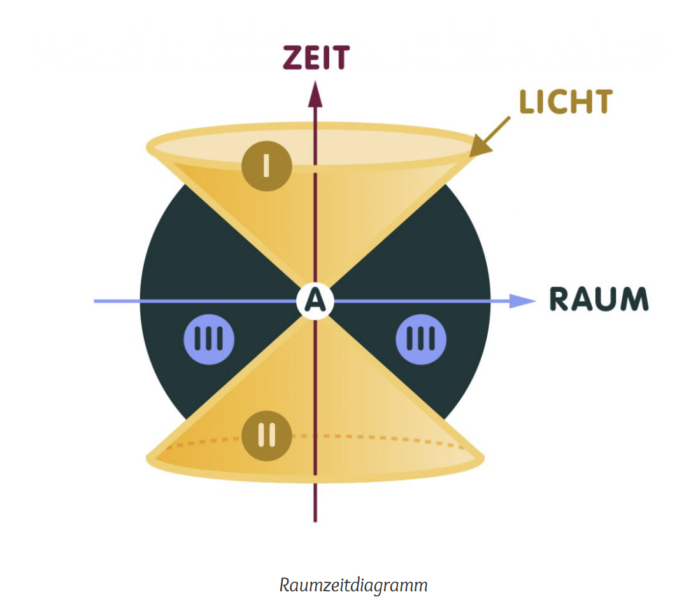
Ereignisse hier können durch das Ereignis A beeinflusst werden.
Ereignisse hier könnten A beeinflusst haben.
Es gibt keinen kausalen Einfluss, weil dafür eine Überlichtgeschwindigkeit nötig wäre.
Beispiele der inneren Energie sind Erwärmen, das Aufladen einer Batterie oder radioaktiven Zerfall. Wichtig ist: Nicht die Atome werden schwerer im alltäglichen Sinn, sondern die Gesamtenergie des Systems trägt zur Masse bei.
Die SRT verändert nicht nur Messwerte. Sie ändert das physikalische Denken: Raum und Zeit gehören zusammen, und auch Masse und Energie sind zwei Seiten derselben Beschreibung.
Einstein war mit der SRT nicht zufrieden, weil sie keine beschleunigten Systeme und keine Gravitation beschreibt. Diesen Übergang erklären wir über ein Gedankenexperiment mit freiem Fall und Raketen.
Einstein stellte sich als Patentanwalt in Bern eine Alltagsszene vor: Er beobachtete einen Fensterputzer und fragte sich, was passieren würde, wenn dieser plötzlich herunterfällt. Während des freien Falls wäre der Fensterputzer praktisch schwerelos, obwohl er sich gleichzeitig beschleunigt bewegt. Genau darin steckt die entscheidende Idee: Vielleicht passen Gravitation und Beschleunigung zusammen, weil Gravitation lokal wie eine Beschleunigung wirkt.
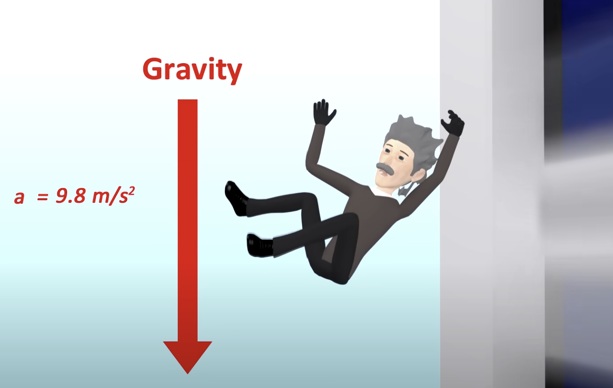
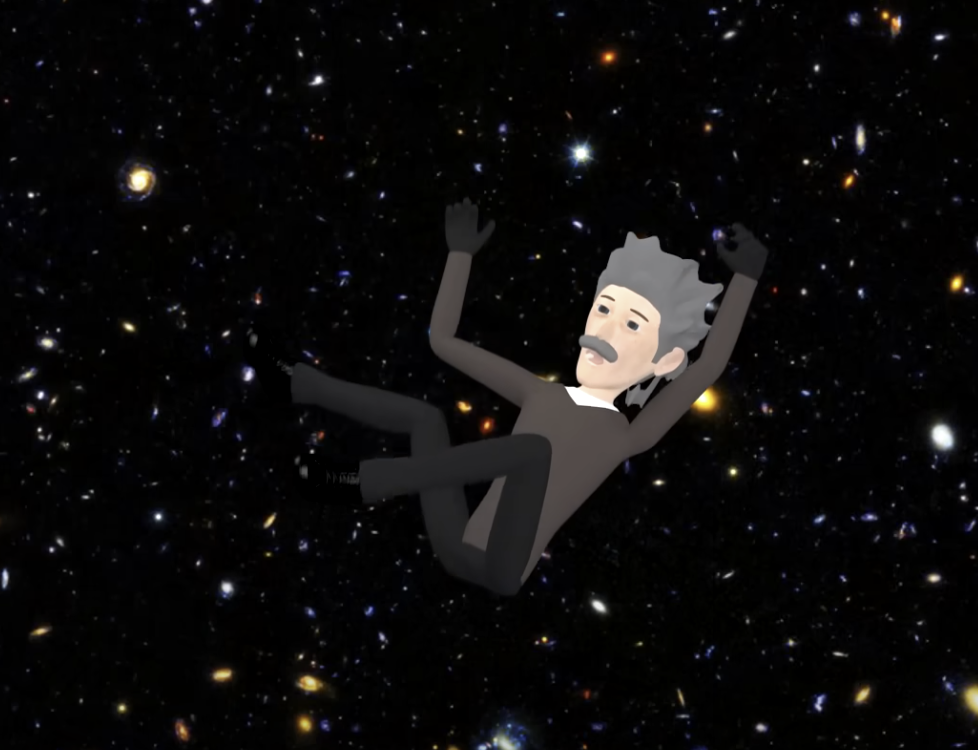
Eine Waage zeigt das Gleiche an, ob man in einer Rakete mit $a = 9{,}81\,\mathrm{m/s^2}$ beschleunigt wird oder auf der Erde steht. Beides ist lokal nicht zu unterscheiden.
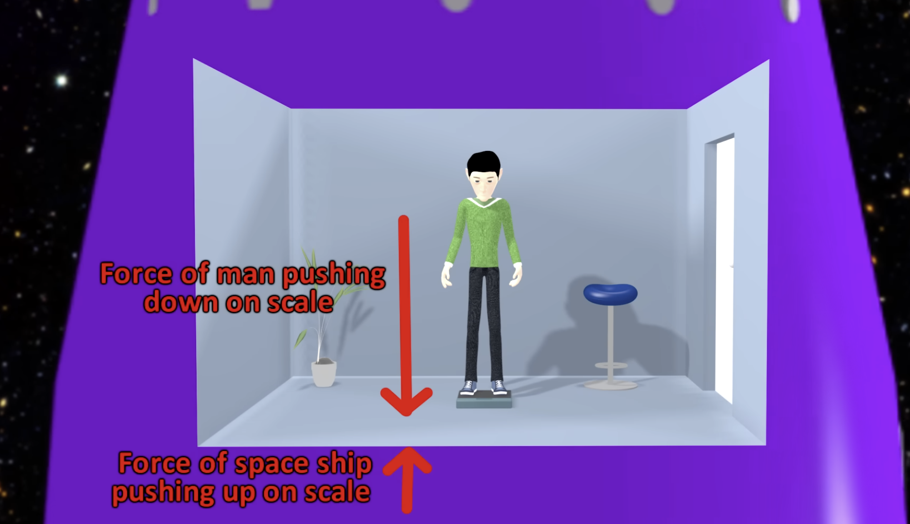
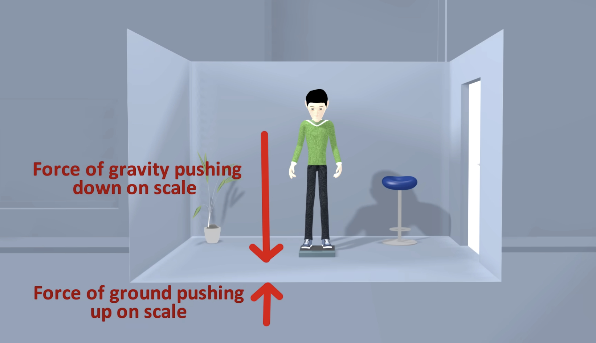
Das ist das Äquivalenzprinzip: Schwerkraft und Beschleunigung sind lokal nicht unterscheidbar. Wenn du nur die Vorgänge in einem kleinen abgeschlossenen Raum beobachtest, kannst du nicht sicher sagen, ob du auf der Erde stehst oder in einer Rakete nach oben beschleunigt wirst.
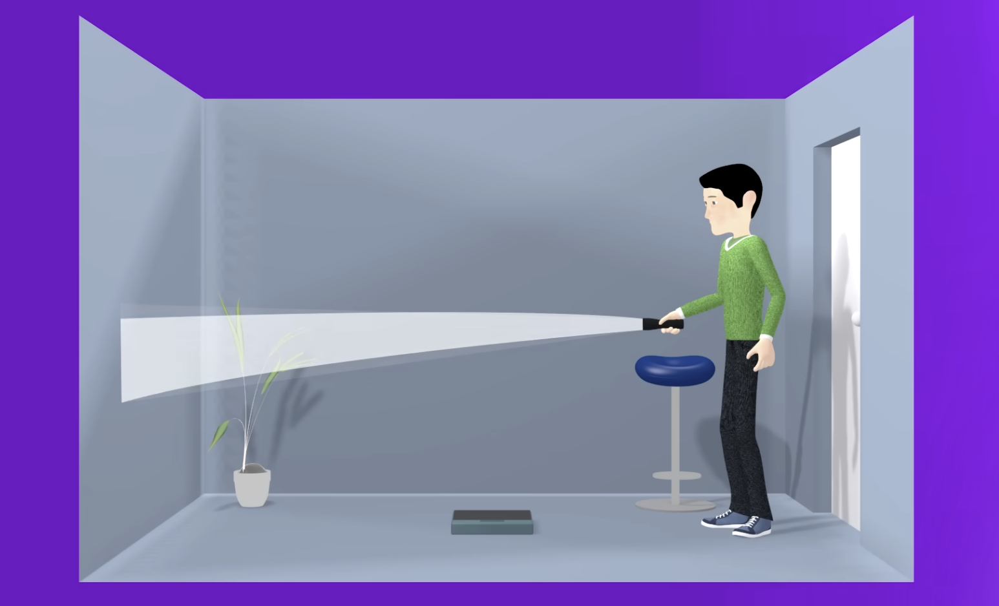
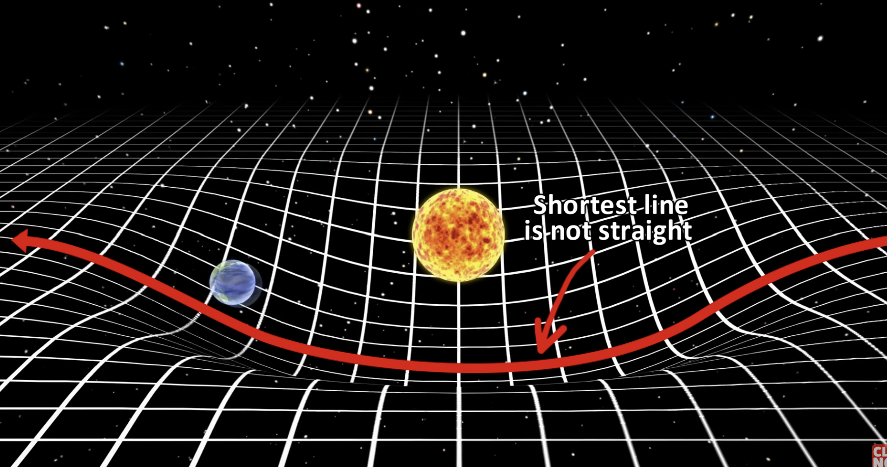
Einstein zieht daraus eine radikale Folgerung: Gravitation ist nicht einfach eine unsichtbare Kraft zwischen Massen. Masse verändert die Geometrie der Raumzeit. Licht folgt immer dem lokal geradesten beziehungsweise schnellsten Weg, aber dieser Weg kann in gekrümmter Raumzeit gebogen aussehen.
Der Übergang zur ART beginnt mit einer Beobachtung über beschleunigte Systeme. Wenn Beschleunigung und Gravitation lokal ununterscheidbar sind, dann muss Gravitation etwas mit der Struktur von Raum und Zeit selbst zu tun haben.
Jetzt kommt die eigentliche Aussage der allgemeinen Relativitätstheorie, ihre spektakulären Folgen und ihre Bedeutung für moderne Technik.
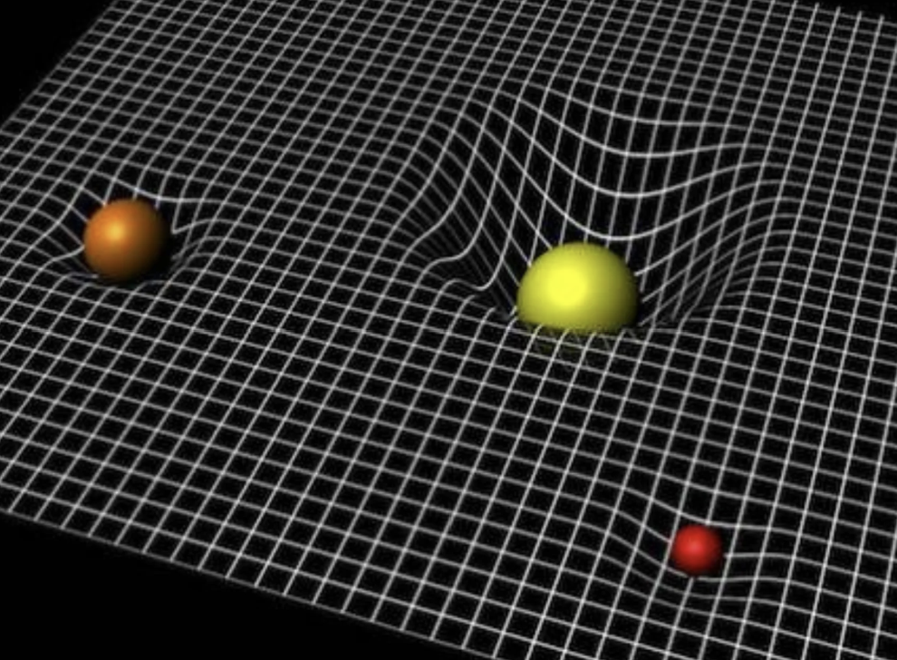
Gravitation ist keine gewöhnliche Kraft zwischen zwei Körpern, sondern eine Folge gekrümmter Raumzeit.
Energie und Impuls der Materie beeinflussen die Geometrie der Raumzeit.
Die Geometrie der Raumzeit beeinflusst die Bewegung der Materie.
Materie, auf die keine Kraft wirkt, bewegt sich in der Raumzeit auf Geodäten.
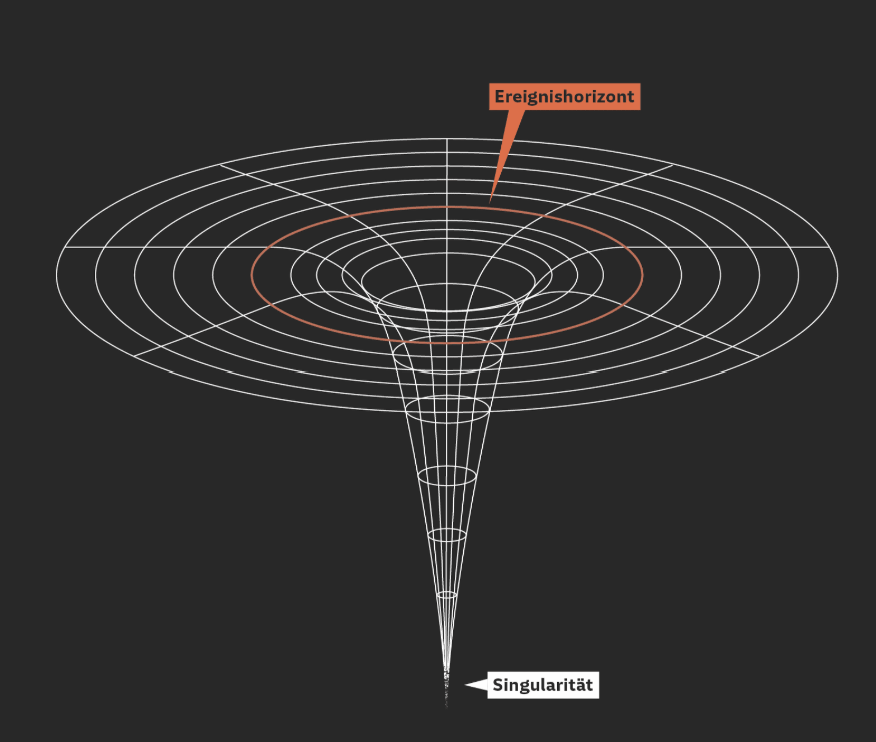
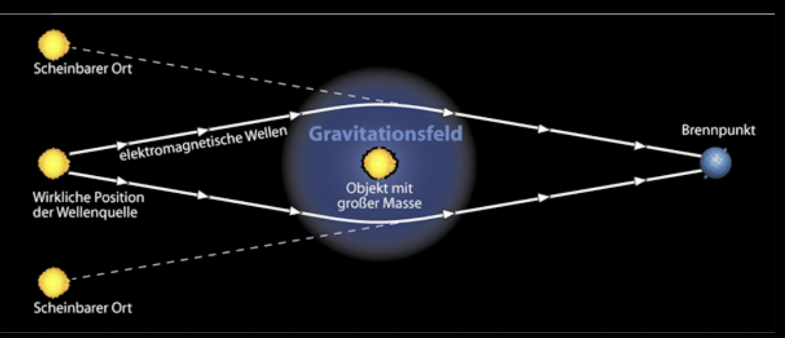
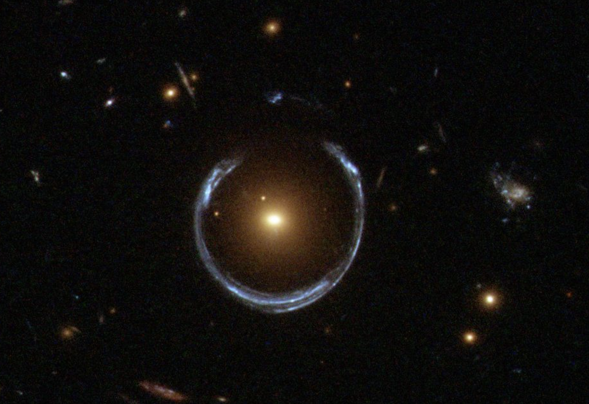
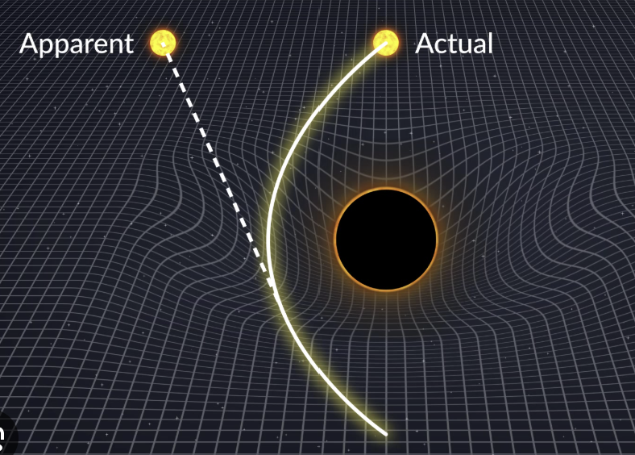
Die Uhren von Satelliten laufen relativ zu Uhren auf der Erde anders. Ohne relativistische Korrekturen würden Navigationsdaten schnell unbrauchbar.
Gravitationslinsen und Schwarze Löcher liefern Informationen über Massenverteilungen und die Struktur des Universums.
Bei Verfahren wie PET spielt die Masse-Energie-Äquivalenz eine zentrale Rolle.
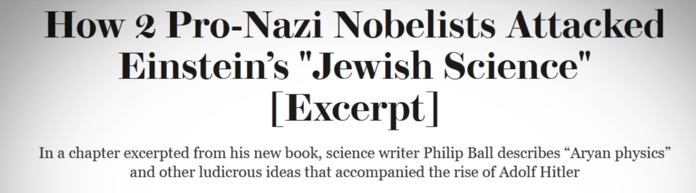
Albert Einstein wurde in Deutschland zunehmend antisemitisch angegriffen und emigrierte 1933 in die USA. Am 2. August 1939 unterzeichnete er einen von Leo Szilard entworfenen Brief an US-Präsident Franklin D. Roosevelt, der vor einer möglichen deutschen Atombombe warnte und amerikanische Forschung beschleunigen sollte.
In der historischen Rückschau wird oft betont, dass die nationalsozialistische Abwertung von Relativitätstheorie und Quantenphysik als angeblich "jüdische Physik" die deutsche Physik massiv schwächte. Das gilt als ein wichtiger Grund dafür, dass Deutschland keine funktionsfähige Atombombe entwickelte.
1952 erhielt Einstein das Angebot, Präsident von Israel zu werden. Er lehnte ab, weil er sich für ein solches politisches Amt nicht geeignet sah.
Die ART beschreibt Gravitation geometrisch, erklärt Beobachtungen wie Lichtablenkung und wird in moderner Technik tatsächlich gebraucht. Sie ist also nicht nur schön gedacht, sondern messbar wirksam.
Du kannst die beiden Postulate nennen und daraus Zeitdilatation, Längenkontraktion und relative Gleichzeitigkeit erklären.
Du kannst den Weg vom Äquivalenzprinzip zur gekrümmten Raumzeit beschreiben und erklären, warum Licht im Gravitationsfeld abgelenkt wird.
Du kannst mindestens zwei moderne Anwendungen oder Beobachtungen nennen, bei denen relativistische Effekte unverzichtbar sind.
YouTube-Video: Die spezielle & allgemeine Relativitätstheorie
Über die Sidebar kannst du dir am Ende die Zusammenfassung deiner Eingaben anzeigen lassen. Nutze besonders die beiden Freitextfelder, denn dort sieht man, ob du die Ideen wirklich verstanden und nicht nur wiedererkannt hast.